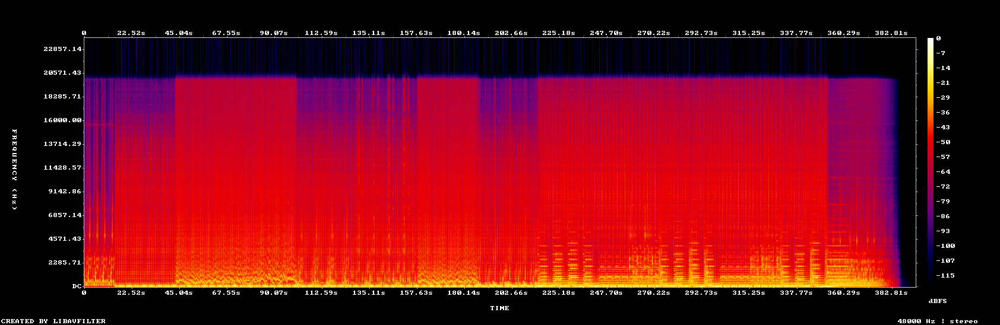

Karl Bartos — Numbers / Computer World (Cover): разбор референса
Черновик · 17 ноября 2026 · источник: youtube.com/watch?v=yaC2zD8C6EU · 6:34 · измерения скриптом sources/analyze.py
Что сделано и чего нет
Замерены темп, пульс счёта, распределение энергии по полосам и плотность событий. Построены карта находок и график энергии. Слова счёта не распознавались: в системе нет распознавания речи, а на слух я не проверял. Всё, что ниже, — числа и оговорки к ним.
Измерения
| Параметр | Значение | Как получено |
|---|---|---|
| Длительность | 394,1 с | заголовок файла |
| Темп сетки | 67,0 BPM | комб-фильтр по огибающей onsets, шаг 0,25 BPM |
| Пульс счёта | 0,894 с (67,1 BPM) | медиана интервалов между событиями в голосовой полосе |
| Всего onsets | 802 | порог 92-й процентиль огибающей, минимум 0,16 с между пиками |
| Похожих на голос | 245 | доля энергии 300–3000 Гц выше 0,35 и выше низкой полосы |
| Пик / RMS | 1,000 / 0,191 | мастер громкий, пик упирается в предел |
| Счёт звучит | 82,7 с (21 % трека) | от первого до последнего голосового события |
Темп: почему 67, а не 100 и не 134
Первый прогон по первым 120 секундам дал 89,8 BPM, второй по всему треку — 100,5. Оба числа — кратные пульсу счёта: 0,894 с это 67,1 BPM, а 100,5 ≈ 1,5 × 67 и 134 ≈ 2 × 67. Устойчивым оказался пульс 0,894 с: он совпал с медианой интервалов между голосовыми событиями, поэтому за основу взят 67 BPM. Это не «медленный трек»: на слух он может читаться вдвое быстрее — 134 BPM, тогда пульс счёта равен половине доли.



Партитура счёта
События в голосовой полосе ложатся на пульс 0,894 с. Между первым и последним укладывается 94 пульса, из них занято 58 (62 %). Карта ниже: X — на пульсе есть голосовое событие, . — пропуск.
| Интервал между событиями, пульсов | Сколько раз | Что это значит |
|---|---|---|
| 1 | 38 | ровный счёт — основная фигура |
| 2 | 11 | пропуск одного пульса |
| 3 | 5 | пауза на два пульса |
| 4, 6, 8 | 3 | длинные паузы между фразами |
То есть рисунок — «серия ровных шагов, затем пропуск». Именно это даёт эффект станка: счёт идёт, спотыкается, снова идёт.
Приёмы вокодера
Что видно и слышно в числах (по измерениям и по устройству жанра):
- Узкая полоса. Голосовое событие почти целиком живёт в 300–3000 Гц: доля этой полосы 0,35–0,39 против низкой 0,05–0,10. Это признак вокодера: он разбивает речь на полосы и переносит огибающие на несущую.
- Ровная огибающая. Интервалы между событиями держатся 0,894 с с разбросом 0,45 — счёт привязан к сетке, а не к человеческой речи.
- Несущая — аккорд. Голос звучит поверх гармонии, а не вместо неё: в событии есть и низкая энергия, и голосовая, значит речь модулирует уже звучащий синтезатор.
- Историческая справка (не измерение). Kraftwerk использовали вокодер Sennheiser VSM 201: говорили числа в микрофон, а прибор переносил спектр речи на аккорд синтезатора. Именно поэтому голос звучит как инструмент, а не как человек.
Синтетический счёт
Новый пример на ядре Codex. Немецкие числа от одного до восьми звучат на сетке 67 BPM, с двумя паузами, заданными для этого примера. Голос вычислен из фонем с помощью гармоник, шума и четырёх формант. Слышен только синтезированный голос.
Скачать WAV · Фонемы и параметры
- Numbers · 67 BPM, синтетический голос DSH (MP3)
- Редактор «Голос» · Исходники голоса
- Бесшовная петля (MP3) · Как собрана музыка из битов
Ограничения
- На слух не проверялось. Ни темп, ни разборчивость счёта, ни тембр.
- «Голосовость» определяется простой эвристикой (доля полосы 300–3000 Гц). Часть зелёных точек может быть аккордами, часть настоящих слов — пропущена. Точность не измерена.
- Темп 67 BPM — это пульс счёта; метрическая сетка может быть вдвое плотнее (134).
- Слова не распознаны: партитура описывает ритм, а не текст.
- Источник — любительский кавер, а не оригинал Kraftwerk: аранжировка и звук могут отличаться от записи 1981 года.